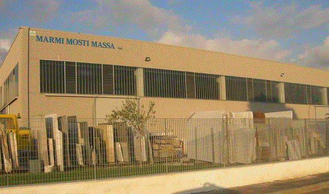

Marmi Mosti Massa S.a.s
Di Francesco Mosti & C.

La Marmi Mosti Massa affonda le sue radici nel settore lapideo nel 1955, ed ha sviluppato negli anni una sempre maggiore esperienza nella lavorazione di marmi, pietre e graniti provenienti da tutto il mondo sviluppando sempre migliori tecniche di lavorazione grazie ad un continuo ammodernamento tecnologico ed un perfezionamento dei processi produttivi.
La gamma dei prodotti da noi realizzati spazia dai più semplici ai più preziosi lavorati in marmo, offrendo, in ogni nostra produzione, massima professionalità e cura dei particolari, così da fornire ogni volta ai nostri clienti merce di grande qualità.
Grazie alla nostra esperienza siamo in grado di soddisfare ogni vostra esigenza, di realizzare lavorazioni secondo vostra richiesta o di proporvi disegni di nostra creatività.
Nelle sezioni Intarsi e Sagomati si possono vedere le nostre realizzazioni, fotografate durante la lavorazione e la prova.